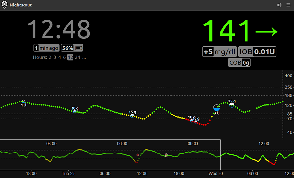
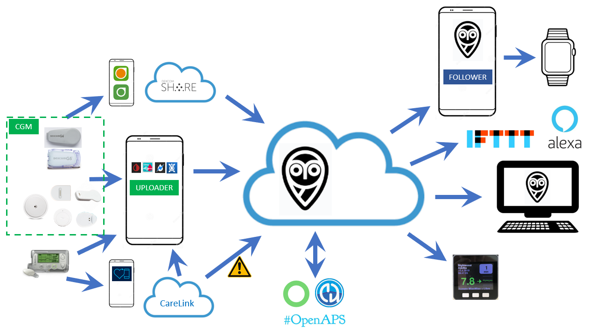

Welcome to Nightscout

Health professional? You might not want to build a Nightscout site and just need to find out how to get data from it, jump to the dedicated pages here.
Introduction
Nightscout (also known as CGM in the Cloud) is an open-source cloud application used by people with diabetes and parents of kids with diabetes to visualize, store and share the data from their Continuous Glucose Monitoring sensors in real-time. Once setup, Nightscout acts as a central repository of blood glucose and insulin dosing/treatment data for a single person, allowing you to view the CGM graph and treatment data anywhere using just a web browser connected to the internet.
There are several parts to this system. You need somewhere online to store, process and visualize this data (a Nightscout Site), something to upload CGM data to your Nightscout (an Uploader), and then optionally you can use other devices to access or view this data (one - or more - Follower).
Nightscout Site
The Nightscout cloud application can be installed by yourself (Do It Yourself, in short: DIY) using hosting services from various cloud service providers.
You can also pay to use a fully-managed Nightscout hosting service and avoid having to personally build and maintain your site.
Uploader
The CGM data is usually sent to Nightscout by an uploader device such as a mobile cellphone running an app like xDrip+, Spike, xDrip4iOS, Medtronic Uploader and others. Alternatively, the CGM data can be pulled directly from your online Dexcom account. The application you’ll need for uploading the data depends on which CGM device you’re using and what type of mobile device you have.
Followers
In addition to viewing the data using a web browser, there are also applications available for mobile devices, smartwatches, electronic devices and other cloud-based services which allow you alternative ways to view and interact with the information stored within your Nightscout site (often known as “Followers”).

Development History
Nightscout was developed by people with Type 1 Diabetes and parents of kids with T1D and has continued to be developed, maintained, and supported by volunteers, clinical use, and commercial sponsorship. The web portal known as Nightscout is made by the CGM Remote Monitor Contributors and the Nightscout community over years.
When first implemented, Nightscout was a solution specifically for remote monitoring of Dexcom G4 CGM data. Today, there are Nightscout solutions available for nearly all commercial CGM sensors. The goal of the project is to allow the remote monitoring, sharing and analysis of any T1D’s glucose levels using existing monitoring devices.
What are the values of Nightscout
We are compelled in the pursuit of humane and equitable application of technology to liberating people from the burden of diabetes. We are not waiting to deliver the benefits we’ve found in sharing all diabetes experiences. Nightscout is free to contribute, free to access, free to criticize, free to try, free to depend on, free to modify, and free to distribute. The Nightscout community demands respect and dignity for all community members. The reputation of the Nightscout community is affected by the quality of the source code, the quality of our relationships, the quality of our discussions, what we are known for doing: the way we treat each other. Users of Nightscout are impacted by reliability, security and confidentiality of Nightscout. Therefore, the developers and contributors of Nightscout strive to improve the quality of Nightscout while making these opportunities accessible to all.
Nightscout’s longevity, the application, the ecosystem, and the culture demand we use all tools at our disposable to achieve the values in a sustainable way. We are not waiting to do whatever it takes to meet the needs of people affected by the inhumane demands of diabetes. Our active collaboration against the burden of diabetes creates the results we desire.
What Do I Need?
You will need:
A CGM sensor
A way to upload your data, to be stored in Nightscout (this is generally an internet-connected mobile phone with a matching uploader app)
Internet access
For Nightscout DIY: Basic computer skills and the ability to carefully follow the installation guides shown on this site
*”Carefully” means that you will thoroughly read, follow and complete each step without skipping any and without giving up thinking that it is too difficult - it isn’t, you just need to be patient.*
IMPORTANT
Before using Nightscout, it is important to understand that this project:
is an open-source, community-based project and is not supported by any company
is not officially approved or regulated for diabetes therapy and/or treatment in any way
If you will be using DIY: You must understand that you take full responsibility for building and running this system and you agree to do so at your own risk.
SAFETY
This project requires a working internet connection and availability of third-party cloud services
Do not rely only on Nightscout as the only way you have of knowing your blood glucose values and trends
Make sure you’re ready to cope with an unexpected failure and always have alternative ways to check your blood glucose levels
How Much Does It Cost?
There’s no simple answer to this. You basically have two options:
DIY: Use instructions on this website to create your own installation. You will need to maintain this installation yourself. There are cloud providers that offer the needed hosting services for free, so your monthly hosting cost can be free - $0 with this option. Of note, with this option you are the person responsible for ensuring the service is up when you need it. The community aims to support people who choose this option, but this is entirely driven by a voluteer effort and support might not be available when you need it.
Use a service: You can use a hosting provider that does all of this work for you in exchange for a monthly fee. There are many options available for this. If you’re a non-technical person, this is a great choice.
Build your own Nightscout site
Tip
Interested in building a Nightscout DIY site? You’ll find instructions ⇒ HERE ⇐.
Note: DIY users of Nightscout have been historically using platforms like Digital Ocean, Microsoft Azure and then Salesforce Heroku to host their sites. With time, more platforms were added, but most now charge for usage.
If you have the time to author instructions for this purpose, new documentation pull requests are extremely welcome as well as comments.
Who can help me with my DIY Nightscout?
You will find many willing and open-hearted people in the Facebook groups.
The main group for all Nightscout support is the “CGM in the Cloud” Facebook group.
There are also many local Nightscout communities and you’ll probably be able to find one in your own country and language if this helps.
Technical Support
Unless you’re paying for a hosted Nightscout including support, this project is “Do It Yourself” (DIY) and supported by volunteers. Whilst you will almost certainly always will find someone ready to help you for free, building your own Nightscout site doesn’t entitle you to any form of support from anybody.
The open-source diabetes movement is founded on the idea of paying it forward and helping others to learn things that others took their time to help teach you about.
Ask nicely, and nice people will always do nice things and help you.
Nightscout developers are busy people and we’d like them to concentrate on maintaining and improving Nightscout, not only supporting users. (This means do not send them private messages or friend requests just to help fix something that is already clearly documented or for help that can be easily requested in the CGM in the Cloud group)
Facebook Privacy
You’ll find a lot of useful and friendly diabetes-oriented groups on Facebook and it’s probably the best place to find online support. Some people express concerns about using Facebook: if you’re worried about your privacy just remember Facebook will only share the information that you allow it to share.
Nightscout as a Service
If you want to save time and avoid the need to maintain a DIY solution, you have many providers.
T1Pal
The T1Pal hosting service has been developed by Ben West, a member of the original CGM in the Cloud team and an original lead core developer for the Nightscout Project. Database and server administration is automated and managed automatically as part of the service. Contact T1Pal support to request specific features or versions.
If you need help with T1Pal, please file a support ticket by emailing support at t1pal.com, or select “Get Support” from My Account.
NS10BE
Started in Nov 2017 and offers full managed Nightscout Services. You can create Nightscout with a few clicks and won’t have to worry about maintenance, updates, database space and CPU limits. A backup of your database and settings is performed every 6-8 hours. You can import data from your old Nightscout instance or MongoDB database, also upload data (Freestyle, Dexcom, Omnipod, …) via CSV files. The servers are located in different fail-safe data centers in Germany, Finland or France (can be selected) . They are monitored by uptimerobot and own Slackbot. When a server goes down, it restarts itself and sends a twitter message.
Support: support at ns.10be.de or https://10be.de/en/contact.html or https://twitter.com/10be_de or https://www.facebook.com/10be.de
Nightscout Pro
Founded in 2022 by Andy Low - A type 1 diabetic web developer from Scotland, UK. Nightscout Pro offers a completely ‘hands-off’ approach to Nightscout hosting, meaning all you need to do is subscribe via the website, and your Nightscout site will be created for you, with little to no configuration needed. Your site will be set up in a ‘default’ configuration, which can be modified easily from their admin panel. Nightscout Pro offers full access to all Nightscout features, and you can get support via Email, Facebook or Discord.
Serendipity Bio
Serendipity provides instant deployment of Nightscout, literally. Create your account and we’ll launch your Nightscout server, launch your Mongo database and provide you a secure, shareable URL.
Never worry about Database size, reliability of your server and upgrading versions. Serendipity Bio fully manages your Nightscout server and database. Nightscout is configured for you automatically on start. Once launched you can use our UI to change your settings to your liking!
Find support documents here or email us any time!
Concerned about reliability or sustainability? Serendipity Bio is built using Amazon Web Services, which also hosts all your favorite websites like Netflix, Apple, AirBnB, and ESPN.
Nightscout4u
Started its service in 2023 and offers a simple one-click hosted Nightscout service solution. It is possible to create and use multiple Nightscout instances with one account.
The service is suitable for beginners to make their first steps and get used to Nightscout.
Nightscout-easy
Built by true enthusiasts who deeply understand the challenges faced by those using Nightscout. This understanding ensures that the service meets all user needs, providing a comfortable and convenient experience.
Simple and intuitive control panel, automatic data backups, easy import and export of Nightscout data, option to choose between old and new versions of Nightscout, user-friendly interface for managing variables, detailed setup videos for xDrip and AndroidAPS, friendly tech support, always ready to help
Opensource.clinic
Founded in 2024 by a medical doctor in the Netherlands, Opensource.clinic is dedicated to simplifying diabetes management through a reliable and user-friendly platform. Combining technical and medical expertise, the organization provides a fully supported hosted solution for Nightscout.
Choosing Opensource.clinic offers several benefits: a quick setup with Nightscout typically ready within 1 to 2 hours, a 24/7 WhatsApp Helpdesk for both technical and medical questions, Nightscout servers hosted in NEN7510-certified data centers, payment via credit card or Google Pay, data import/export support, automatic backups, and a user-friendly personal dashboard for configuring Nightscout variables and analyzing your diabetes data.
Higher-tier subscriptions offer personalized coaching from a dedicated team of healthcare and IT professionals experienced or trained in DIY looping. The support team is located across various time zones, ensuring round-the-clock assistance, and is currently available in English and Dutch. Please visit our website or contact us via email if you have any questions.
How to Use These Docs
Use the navigation menu at the top on the left of the screen to find the section that you are looking for.
A Table of Contents for the current page is always displayed on the left side of the screen.
You can search the Nightscout Docs site by entering your search string (only English) below the Nightscout main logo top left.
How Can I Help?
You’ll find the source repository for this documentation here. Please don’t hesitate to improve or correct anything you see and create a pull request!
You’re also welcome to contribute or report any error, unclear explanation, typo, broken link etc. by going to GitHub and opening an issue.
Finally, to help on the development of Nightscout itself, feel free to join in at our Discord Channel.